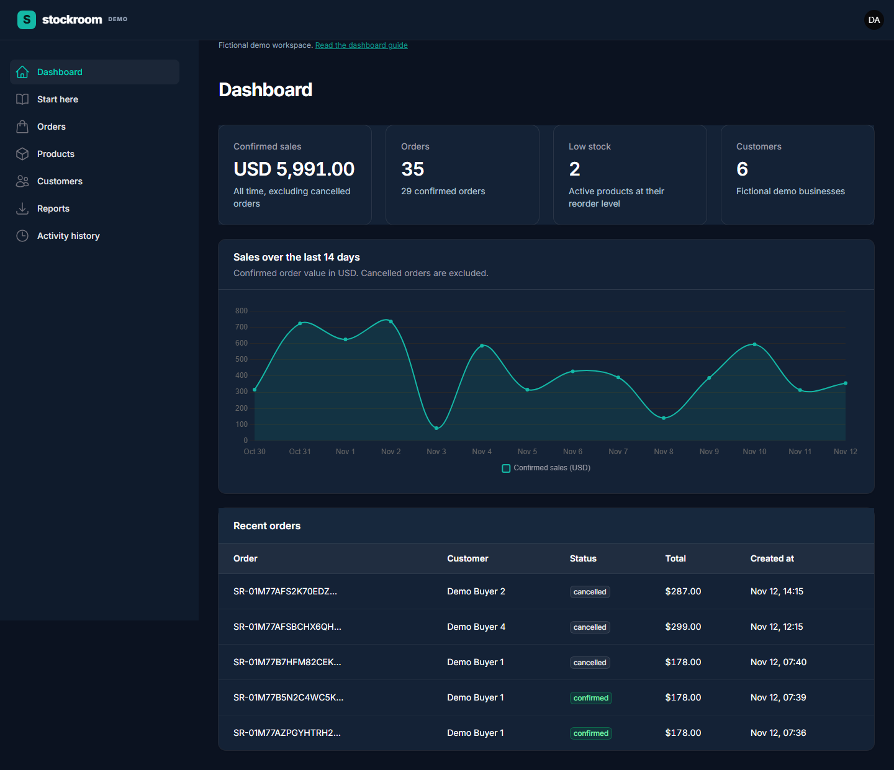

All of the order.
Or none of it.
If any product is unavailable, the complete order rolls back. Stock deductions and order records commit together.
Verified rollbackLARAVEL 13 / FILAMENT 5 / BY ABDULRHMAN YAGHI
A working operations dashboard with careful backend rules. Place orders, track inventory, and generate private reports without losing sight of what changed.
Guided preview of the real application.
Run the full dashboard locally from the public repository.

WHAT MAKES IT MORE THAN A CRUD SCREEN
The interface is the visible part.
The important work happens behind it.
If any product is unavailable, the complete order rolls back. Stock deductions and order records commit together.
Verified rollbackA guarded status change prevents repeated cancellation from adding inventory twice.
Verified idempotencyPolicies and service checks separate administrator and staff capabilities. Report files stay private to their owner.
Verified authorizationYOUR FIRST FIVE MINUTES
Choose a step to see the real screen
and what to try in the local app.
These are recorded application screens. This hosted guide does not write to a database.
Review confirmed sales, total orders, low stock and customers. The chart excludes cancelled orders and shows the last fourteen days.
THE WORKFLOW, IN MOTION
Real screen recordings.
Chapter captions. No customer data.
A SMALL SYSTEM, EXPLAINED
Filament collects the input. Services enforce permissions and business rules. Database transactions keep related changes together. A queue worker handles reports independently.
Read the architecture notes ↗GO BEYOND THE PREVIEW
PHP 8.4, Composer, Node.js and SQLite.
A fresh checkout is all you need.
composer install
composer run demo
npm ci
npm run build
php artisan serveIn a second terminal: php artisan queue:work
Administrator
Manage products and customers, adjust inventory, place and cancel orders, generate reports and inspect activity.
Staff
View products and customers, place orders and cancel their own orders.
Public demo credentials are documented for local use only. The project does not process payments, calculate taxes or implement multiple warehouses.